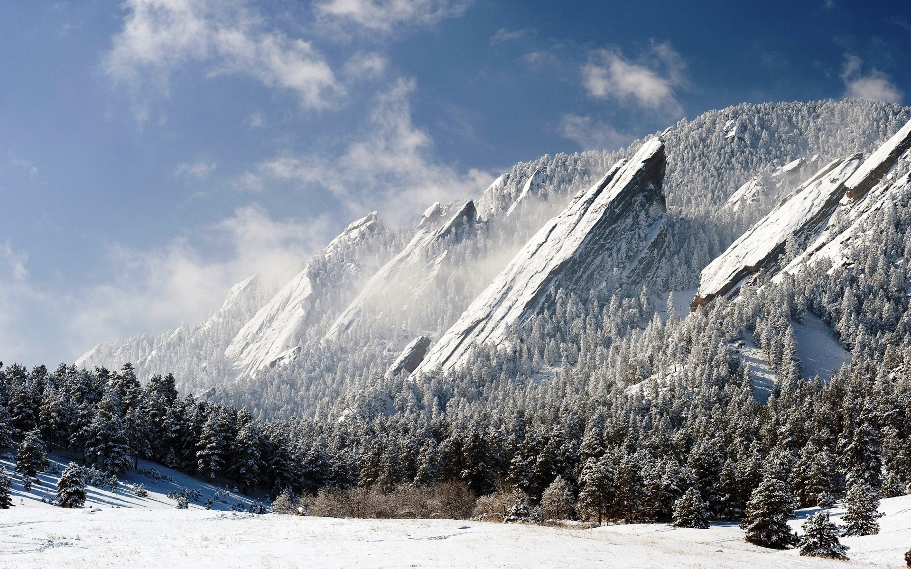
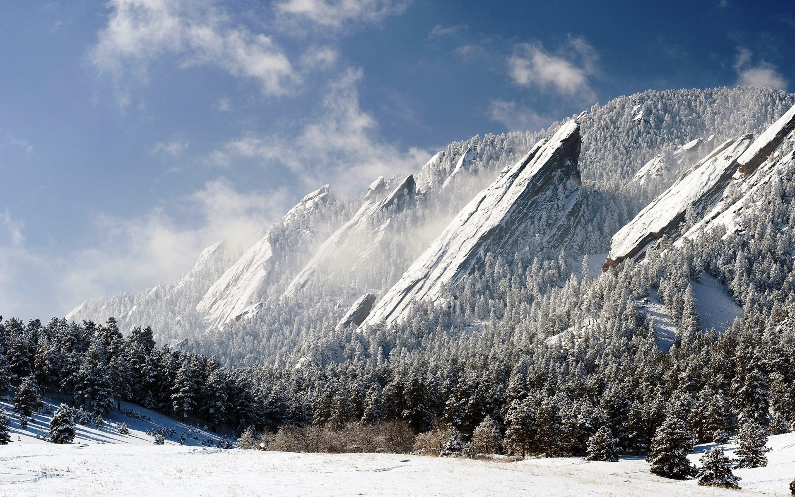

Travel
Boulder, Colorado

Geographical Location: North America
Boulder, Colorado is where the Buffalo Roam. It is home to my Alma Mater, the University of Colorado! There are many hiking locations near the city center, most notably Chautauqua Park.
Boulder, Colorado is a small city of about 104,000 people, about a quarter of which are students that attend the University of Colorado. They city is a vibrant start-up hub that is a center for technology and innovation much like Ann Arbor is.
Photo Gallery


 

Niagara Falls

Geographical Location: North America
Niagara Falls is located on the border between Canada and the United States. Connecting Lake Erie and Lake Ontario, Niagara Falls has the highest flow rate of any waterfall in North America.
Niagara Falls draws in thousands of visitors every year, and for good reason. As such, there are numerous things that you can see while you visit the falls, and it is very easy to make a full trip out of seeing this wonderful sight.
Photo Gallery


Shanghai

Geographical Location: Asia
Shanghai, often referred to as the "Pearl of the Orient," is a dynamic and vibrant metropolis in China. As one of the world's largest cities, Shanghai is a dazzling blend of tradition and modernity. With its iconic skyline featuring towering skyscrapers like the Shanghai Tower and the Oriental Pearl Tower, it's no wonder that Shanghai is often considered the financial and economic hub of Asia. Beyond its impressive architecture, the city boasts a rich cultural heritage, reflected in its historic neighborhoods such as the Bund and the French Concession. Here, you can stroll along tree-lined streets, explore colonial-era buildings, and savor a mix of international cuisines. Shanghai is also a global center for fashion, art, and entertainment, with a thriving arts scene, world-class museums, and a bustling nightlife. Visitors to Shanghai are sure to be captivated by its energy, diversity, and the seamless fusion of old and new.
Shanghai is not just a city of skyscrapers; it's a city of contrasts. The serene Yu Garden and its classical Chinese architecture offer a peaceful escape from the bustling streets, while the ultra-modern shopping districts like Nanjing Road cater to the desires of avid shoppers. The city's food scene is a culinary adventure in itself, with a vast array of local and international dishes available from street vendors to Michelin-starred restaurants. Additionally, Shanghai is a gateway to Chinese culture and history, as it hosts numerous festivals, art exhibitions, and performances that showcase China's heritage. Whether you're wandering through ancient temples, exploring the thriving contemporary art scene, or enjoying a traditional tea ceremony, Shanghai promises a multifaceted experience that captures the essence of China's past, present, and future.
Photo Gallery